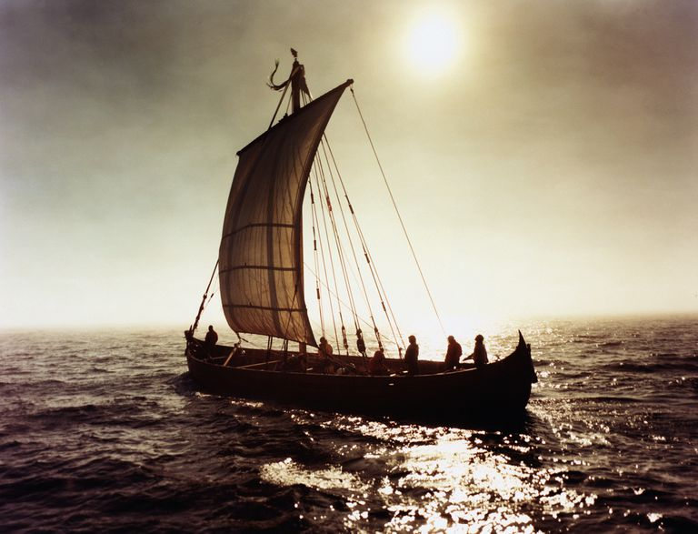

History:
In 1993 an undergraduate geology student discovered a tetrapod track on the north east of Valentia Island. The tetrapod tracks are in lay person's terms footprints of a animal believed to have been created some 385 million years ago (give or take a year or two). The Valentia Island track way is of international importance as it provides some of the oldest evidence of one of the first water dwelling creatures which crawled out of the water and made the important evolutionary step toward land dwelling.

The first recorded Viking raid in Ireland was in 795 AD, The Vikings visited Beginish Island, and Valentia Harbour in Kerry aroun that time. When the Vikings arrived they were greeted with warm welcomes to the island, the islanders at the time were very friendly folk, and never encountered any war or crime as such. The Vikings were so taken aback by how they were welcomed to the island, that they hadn't the heart the raid the town like they had planned.
The manufacture of the cable started in early 1857 and was completed in June. Before the end of July it was stowed on the American Niagara and the British Agamemnon — both naval vessels lent by their respective governments for the task. They started at Valentia Harbour in Ireland on 5 August. For the first few days, everything went well but six days later, due to a mistake made with the brake which limited the rate of descent, the cable snapped. Just 380 miles had been laid. The ships were forced to return to port. An extra 700 miles of cable was made for the second attempt which began on 25 June 1858. This time the same two ships met each other in mid-Atlantic where they joined their respective ends. The cable broke almost immediately.